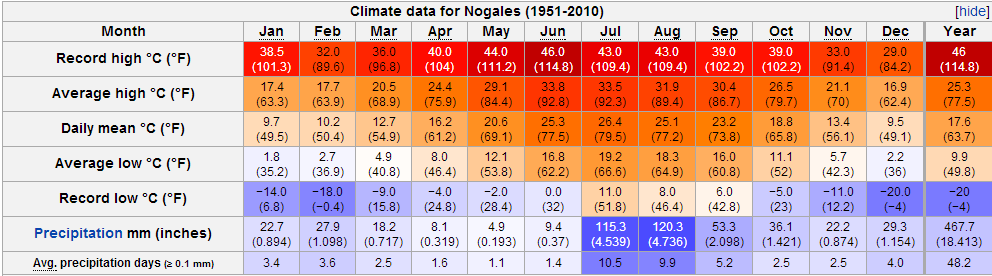
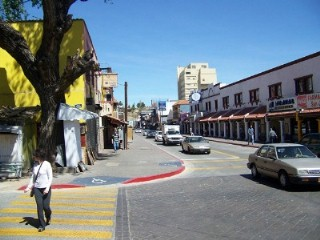
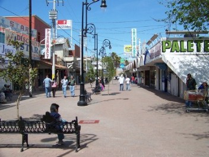
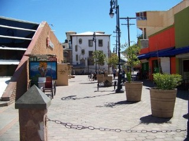
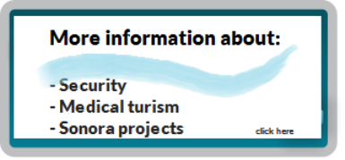

Historia
Nogales, Sonora, fue establecido como independiente el 11 de Julio de 1884, cubre un fue área de 1,675 km cuadrados, y fue declarado municipio el 1 de Enero de 1920.
Clima
{kind=link}
Monumentos
En el centro de Nogales hay una estatua, ubicada en la plaza Benito Juárez. La estatua fue diseñada por el escultor español Alfredo Just. Es un tributo al presidente mexicano Benito Juárez y es “monumento a la ignorancia” representa al hombre matando a la ignorancia.
 {kind=link}
{kind=link}
Les quiero dar un avance sobre las condiciones de las ciudades que están entre Sonora y Arizona, especialmente para las personas que viven fuera de estos estados.Primero, las historias sobre los carteles y drogas son verdaderas, pero el problema es entre ellos y además esto se encuentra fuera del área turística.
Buenas noticias
El área turística de nogales es definitivamente segura para los turistas americanos y canadienses, el directorio medico de Nogales esta visible en el área turística.
El municipio de Nogales adquirió 16 cámaras de seguridad monitoreadas 24/7. Próximamente las cámaras estarán disponibles en línea.
La ciudad tiene más policías, así como una unidad policiaca para turistas. El trafico del centro es un poco congestionado, haciendo difícil para los criminales movilizarse rápido.
Estamos trabajando con la oficina del presidente de Nogales para hacer una ciudad más cómoda para nuestros visitantes, ahora se cuenta con más eventos, mejores restaurantes y más tiendas de curiosidades.
Nogales ha gastado una considerable suma de dinero en los últimos años, para hacer nuevas banquetas y calles, además de nuevas plazas. Nogales es más placentero para caminar, ya que sus nuevas banquetas con más amplias y las calles más modernas.
Estamos trabajando con la oficina del presidente de Nogales para hacer una ciudad más cómoda para nuestros visitantes, ahora se cuenta con más eventos, mejores restaurantes y más tiendas de curiosidades.
Muchos de nuestros pacientes de Nueva York, Washington y otros lugares lejanos, están usando sus millas frecuentes para incrementar sus visitas a nosotros y así mejorar la calidad de su salud bucal, no te olvides de la tuya. Ahora es mas fácil salir de Mexico hacia Estados Unidos. Incluso las personas mayores de 65 años o minusválidas pueden ir al frente de la línea.
 {kind=link}